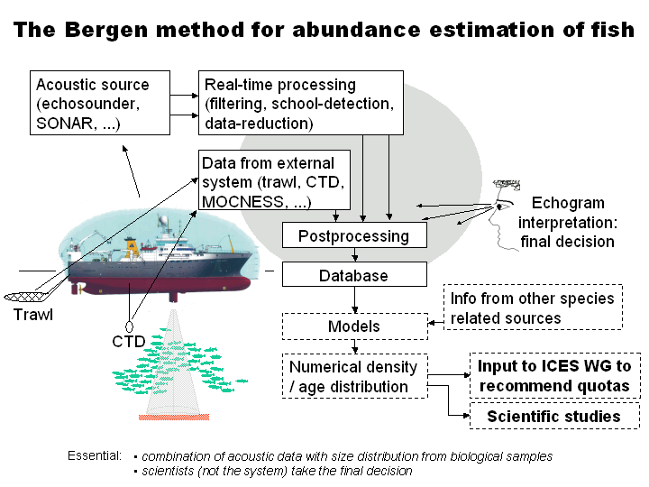
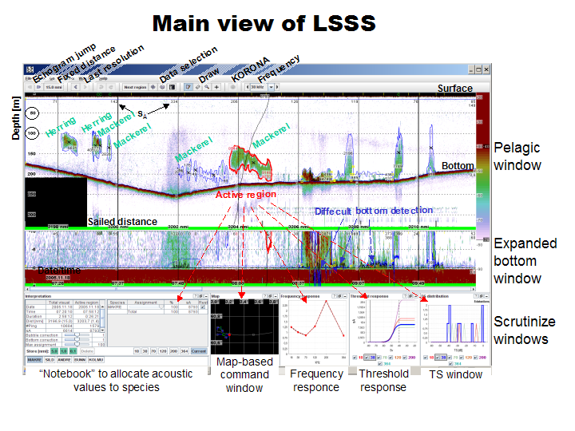

This section describes the interpretation process of LSSS, and the results of the actions.
The process of interpreting acoustic data, combining these with biological samples,
and finally calculating biological abundance is supposed to be a general process. However,
fisheries research institutes around the world have adapted to different procedures that
may be surprisingly different. The figure below gives an overview over one of these working
procedures, which is the one used by the Institute of Marine Research. The combination of
acoustic data and biological samples are essential in this method.
Acoustic data is collected with echosounder or sonar. These acoustic data may be partly
processed in real-time to reduce the time needed for the interpretation
process itself. Data are also collected from other data sources than the acoustic sources.
Sometimes, the data to be collected are planned at the start of a survey, and sometimes
data are collected when the acoustic data indicate that so should be done. Trawling is
commonly triggered from acoustic registrations.

Scrutinize overview
Some of the main windows of LSSS are shown below. The text in the figure gives the overall
description of the LSSS windows. The windows can be contained in a common
frame as shown below, but each of the sub-windows may also be free-coupled from the frame
and be used as an independent window.

Acoustic data is scrutinized with LSSS through the following steps:
Preprocess data if needed. (Noise removal, categorization, school detection). This could be done in KORONA
before starting LSSS, or initiated from LSSS using KORONA relay. See the Preprocessing
section for more.
Set or check the LSSS application configuration. (Database, default data directories,
data reading strategy, etc.)
Set or check the LSSS survey configuration. (Survey, acoustic categories,
storage grid, data directories, etc.). A common storage grid is 1.0 nmi horizontally and
10 m vertically for pelagic echogram channels.
Set or check the LSSS module configurations.
Select all data files to be scrutinized in this session, e.g. 24 hours of data.
Draw region-lines to limit the extent of the acoustic registrations covering large
distances. Use available means to assign one or several "default" acoustic
categories to the regions. Do not try to be too detailed: it is only the "default"
acoustic categories that should be assigned at this stage. Available means to improve
interpretation are described below.
Reduce echogram distance to cover e.g. 50 nautical miles, and draw new region-lines
or adjust existing region-lines to limit the extent of the regions covering large
distances. Available means to improve interpretation are described below.
The data interpretation is now to be done in detail: reduce visualised echogram to an
appropriate elementary scrutinizing distance (ESD), e.g. 5.0 nmi (which could be set
in the grid-setup).
Draw new region-lines or adjust existing region-lines to limit the extent of the
regions covering large distances. Import school regions from preprocessed data (i.e.
KORONA data) whenever desired. Switch frequency if necessary to see the extent of the
echo-traces better. Switch to preprocessed data to visualize acoustic categories if
desired. Zoom in or out to get a closer look at the echo-traces. Some of the other
available tools during data interpretation are e.g. target strength distribution,
frequency response, threshold response, trawl catches, CTD, geographical area, depth
of registrations, echo-trace shape and strength, time of day ...
Assign NASC to each acoustic category in each layer.
Switch to "DETAIL" mode.
The storage grids are shown when the cursor above the
store button.
When all layers and regions are interpreted, store the results to the database. The
stored sections are marked as an
echogram overlay.
Go to the next distance (ESD) and repeat the procedure described above.
Continue until all selected ESD are scrutinized and stored to the database.
Print the desired reports from the database by using
Database reports.